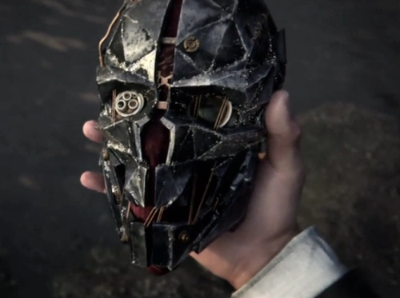

Dishonored 2, an upcoming stealth action-adventure video game, and the sequel to the critically acclaimed 2012's Dishonored, developed by Arkane Studios, has been officially announced during Bethesda Softworks’ Electronic Entertainment Expo 2015 press conference.
The plot of Dishonored 2 is set 15 years after The Dunwall Plague of the original game and takes place on the island of Serkonos, one of the four major islands of the Empire, where Corvo was born. Emily, the heir of the Empire saved by Corvo as a little girl in the events of the first game, is now grown up, and, after being trained in martial arts, becomes a fully-fledged assassin of her own right.
Accordingly, in a clever move which was clearly aimed at making the game more appealing to female gamers, the player can now choose to play as a brand new playable character, princess Emily Kaldwin, in addition to the, now requisite, character of Corvo Attano, the main protagonist of the original Dishonored video game.
Like in Dishonored, the player strives once again to save the Empire of the Isles, but this time not from the home-grown conspirators, but from an ‘otherworldly usurper’ who seizes the throne. Similarly to the original game, the player can decide whether to use brute force or play stealthily (or use combination of both) to achieve the mission objectives, and, according to the developers, can finish the entire game without a single kill.
Although the gameplay of the original Dishonored was praised by players for giving the freedom to use differing methods to complete the mission objectives and to explore the levels at the player’s leisure, the game plot received a less enthusiastic response, with the general consensus being that the standalone stories driving the individual missions were engaging and convincing, but the game’s main, overarching storyline, much less so. Let’s hope that this issue will be addressed in the sequel and that Dishonored 2 will be even better than its predecessor.
Dishonored 2 is expected to be released in the first half of 2016 in versions for Microsoft Windows, PlayStation 4, and Xbox One.
Below is a handful of screenshots from the official trailer video:
{kind=link}
{kind=link}
{kind=link}
{kind=link}
{kind=link}
{kind=link}
{kind=link}